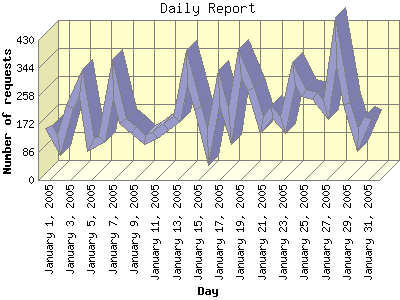

Report generated by Analog 5.91beta1 and Report Magic 2.21
|
Web Server Statistics for "Harish Narayanan (hnarayan) - January 2005" Report generated by Analog 5.91beta1 and Report Magic 2.21 |
The Daily Report identifies the activity for each day within the reporting period. Remember that one page hit can result in several server requests as the images for each page are loaded.

| Day | Number of requests | Number of bytes transferred | Percentage of the bytes | Percentage of the requests | |
|---|---|---|---|---|---|
| 1. | January 1, 2005 | 164 | 4.702 MB | 1.12% | 2.47% |
| 2. | January 2, 2005 | 107 | 4.105 MB | 0.98% | 1.61% |
| 3. | January 3, 2005 | 225 | 8.698 MB | 2.07% | 3.39% |
| 4. | January 4, 2005 | 298 | 14.492 MB | 3.45% | 4.49% |
| 5. | January 5, 2005 | 109 | 4.063 MB | 0.97% | 1.64% |
| 6. | January 6, 2005 | 125 | 8.604 MB | 2.05% | 1.89% |
| 7. | January 7, 2005 | 310 | 25.100 MB | 5.98% | 4.67% |
| 8. | January 8, 2005 | 182 | 6.126 MB | 1.46% | 2.74% |
| 9. | January 9, 2005 | 155 | 7.327 MB | 1.75% | 2.34% |
| 10. | January 10, 2005 | 124 | 2.530 MB | 0.60% | 1.87% |
| 11. | January 11, 2005 | 139 | 8.058 MB | 1.92% | 2.10% |
| 12. | January 12, 2005 | 164 | 8.374 MB | 1.99% | 2.47% |
| 13. | January 13, 2005 | 188 | 6.303 MB | 1.50% | 2.83% |
| 14. | January 14, 2005 | 345 | 11.803 MB | 2.81% | 5.20% |
| 15. | January 15, 2005 | 222 | 8.705 MB | 2.07% | 3.35% |
| 16. | January 16, 2005 | 100 | 5.347 MB | 1.27% | 1.51% |
| 17. | January 17, 2005 | 284 | 13.228 MB | 3.15% | 4.28% |
| 18. | January 18, 2005 | 167 | 6.910 MB | 1.65% | 2.52% |
| 19. | January 19, 2005 | 356 | 24.502 MB | 5.83% | 5.37% |
| 20. | January 20, 2005 | 281 | 6.677 MB | 1.59% | 4.24% |
| 21. | January 21, 2005 | 170 | 9.704 MB | 2.31% | 2.56% |
| 22. | January 22, 2005 | 210 | 67.189 MB | 16.00% | 3.17% |
| 23. | January 23, 2005 | 169 | 4.140 MB | 0.99% | 2.55% |
| 24. | January 24, 2005 | 327 | 12.799 MB | 3.05% | 4.93% |
| 25. | January 25, 2005 | 266 | 74.364 MB | 17.70% | 4.01% |
| 26. | January 26, 2005 | 257 | 12.458 MB | 2.97% | 3.88% |
| 27. | January 27, 2005 | 216 | 8.701 MB | 2.07% | 3.26% |
| 28. | January 28, 2005 | 423 | 19.888 MB | 4.74% | 6.38% |
| 29. | January 29, 2005 | 234 | 8.168 MB | 1.95% | 3.53% |
| 30. | January 30, 2005 | 124 | 6.100 MB | 1.45% | 1.87% |
| 31. | January 31, 2005 | 191 | 10.867 MB | 2.59% | 2.88% |
Most active day January 28, 2005 : 130 pages sent. 423 requests handled. 20,853,631.00 served.
Daily average: 213 requests handled. 13.549 MB served.
This report was generated on February 1, 2005 19:38.
Report time frame January 1, 2005 00:39 to January 31, 2005 23:55.
| Web statistics report produced by: | |
 Analog 5.91beta1 Analog 5.91beta1 |  Report Magic 2.21 Report Magic 2.21 |